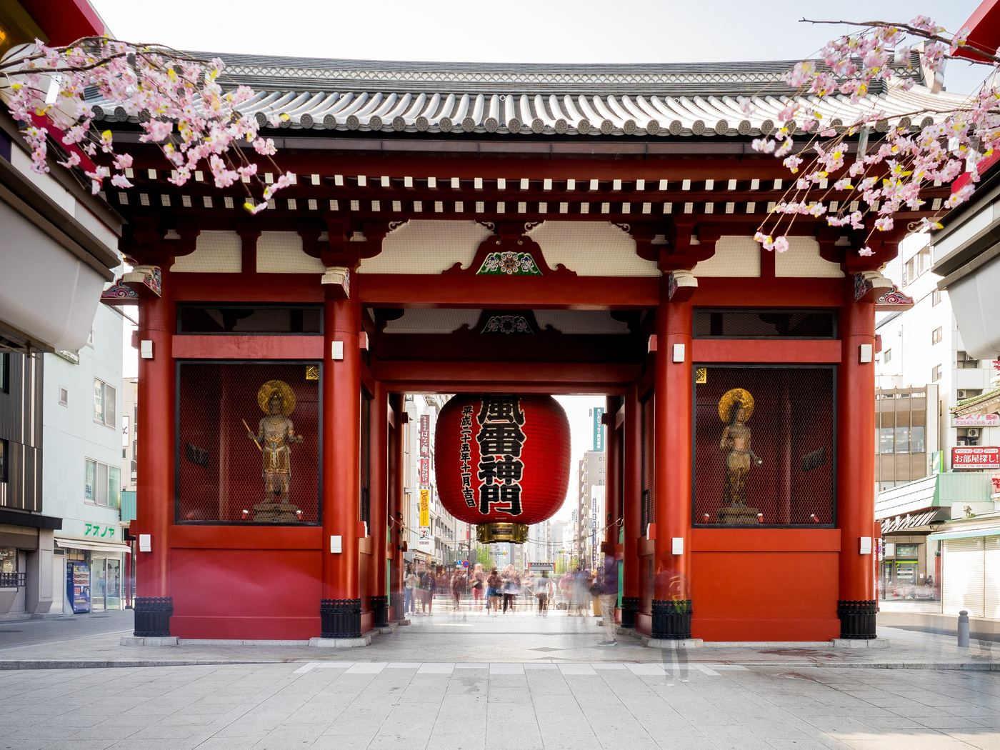
東京・浅草 二泊三日TOKYO · ASAKUSA · 2026.09.24 – 09.26
센소지 이른 아침, 스카이트리 일몰, 몬자야키, 옥상 온천, 갓파바시와 우에노까지. 분 단위 일정과 틀어졌을 때의 차선책.
3일짜리 일본 eSIM 구매 완료. 스카이트리 17:00 입장권도 예매 완료.
입국심사·세관 QR 발급. 몬자야키는 코시로가 예약(위치는 추후 전달받는 대로 확정).
집 와이파이에서 eSIM QR 설치만 하고 켜지는 않기. 환전은 소액만(Suica·카드로 대부분 해결).
07:10 출발이라 05:10 카운터. 주차장은 예약이 안 되고(만차), 발렛도 큰 의미 없어 공용 주차장에 바로 대는 걸로. 여유 있게 출발.
비행기 모드 해제 전에 eSIM 회선 활성화 + 데이터 로밍 ON.
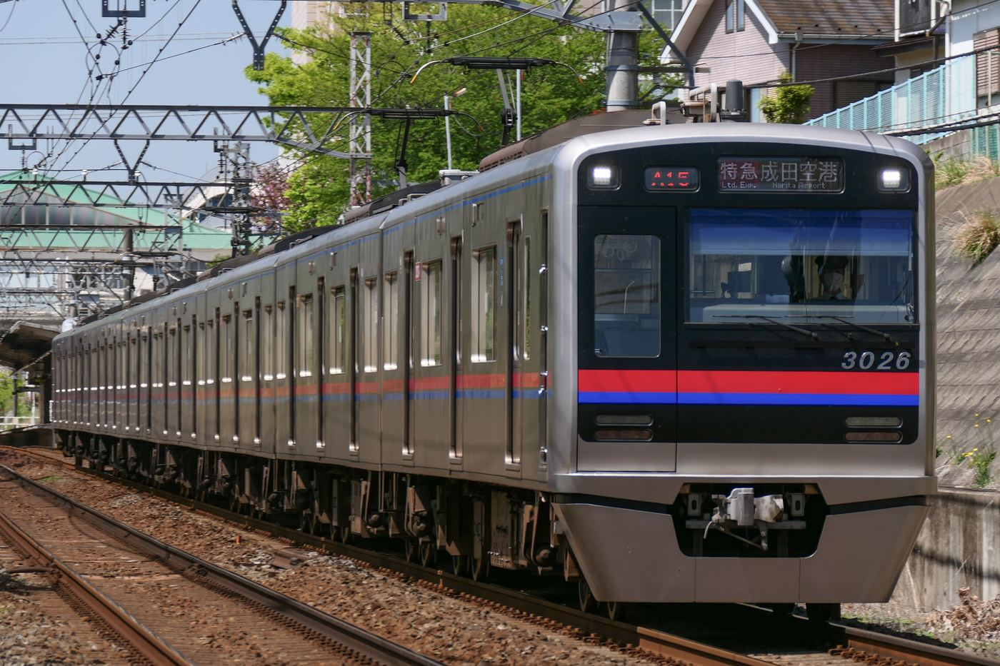
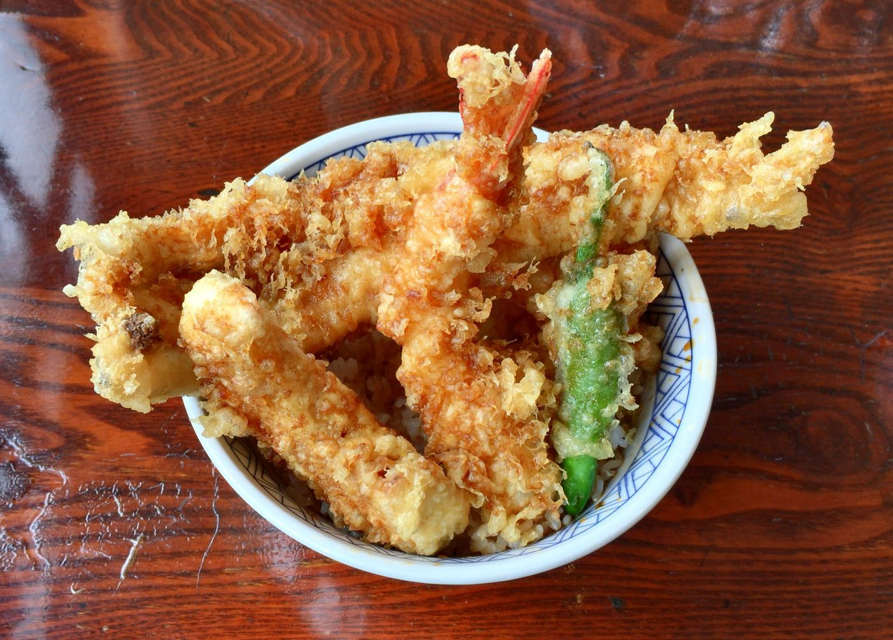
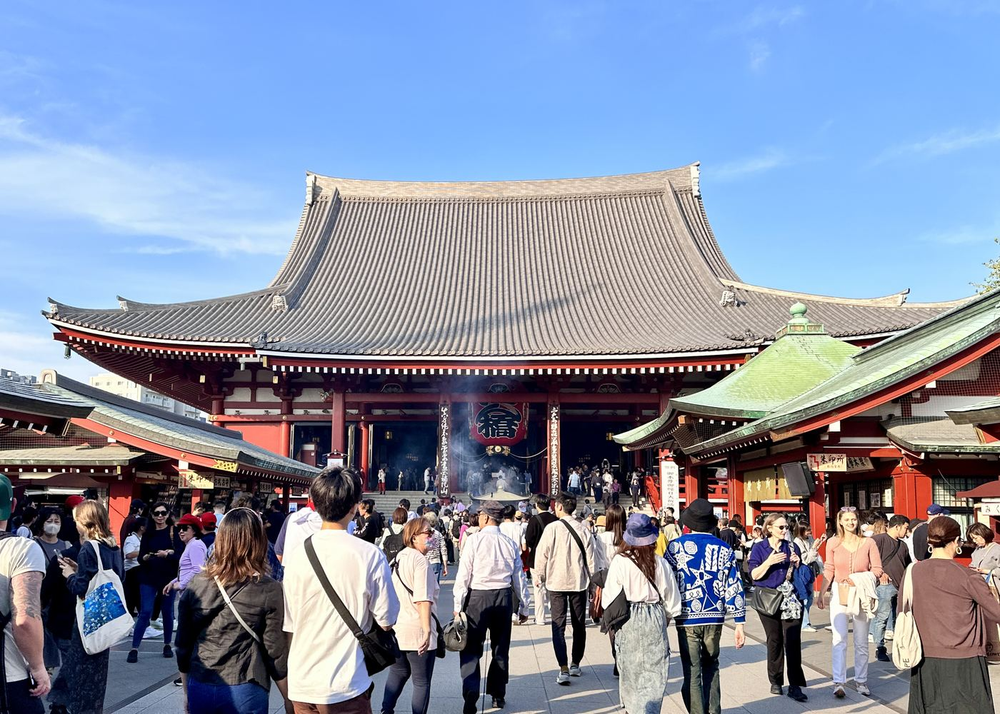
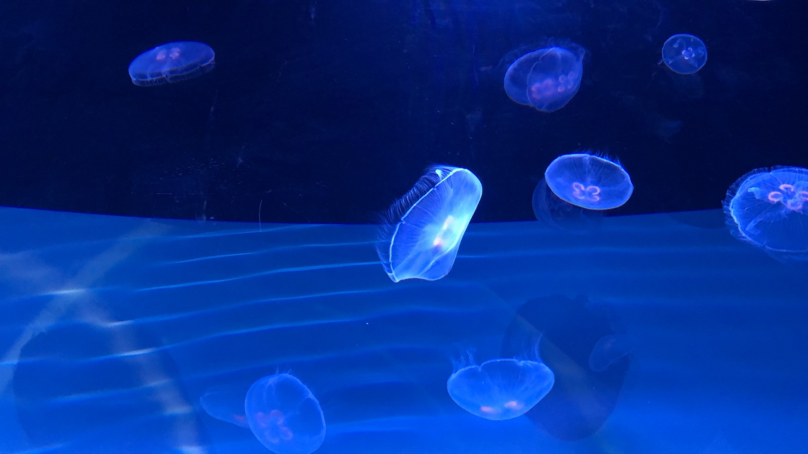
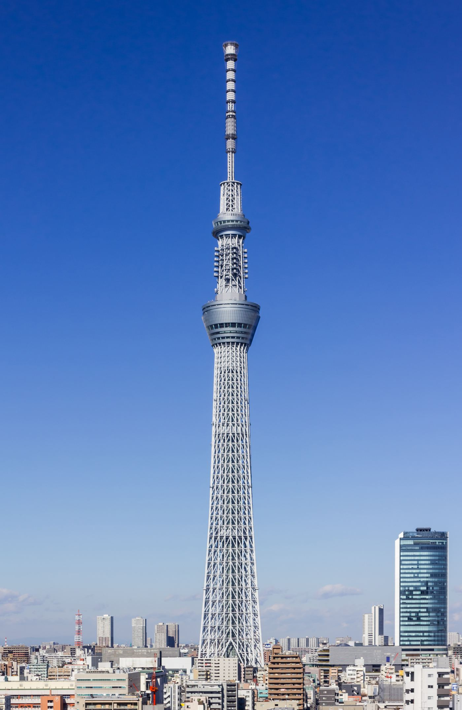
| 시간 | 일정 | 차선책 |
|---|---|---|
| 10:00 | 나리타 착륙비행기 모드 해제 전에 eSIM 켜기. Visit Japan Web QR 화면 캡처해 두면 신호 없어도 됨 | 입국이 11:30을 넘기면 텐동 점심을 빼고 나카미세 간식으로 대체, 센소지부터 시작 |
| 10:05 | eSIM 회선 ON · 데이터 로밍 ON설정 → 연결 → SIM 관리자. 카톡 한 번 보내서 확인 | 안 잡히면 공항 무료 와이파이(FreeWiFi-NARITA)로 판매처 문의. 최악엔 공항 통신사 카운터에서 물리 유심 구매 |
| 10:50 | 입국·세관 통과 → B1 케이세이 역안내판 "京成線 / Keisei Line". 터미널 1은 남쪽 윙 지하, 터미널 2도 지하 1층 | |
| 11:00 | Welcome Suica 구입역 앞 자판기, 여권 불필요, 보증금 없음. 3,000엔 충전이면 3일 지하철·편의점 커버 | 자판기 줄이 길면 일단 액세스 특급 표만 창구에서 사고 Suica는 아사쿠사역에서 |
| 11:15 | 케이세이 액세스 특급 승차행선지 "羽田空港"·"西馬込"·"泉岳寺" 표시가 아사쿠사 직통. 약 40분 간격. 스카이라이너와 같은 승강장 방향이니 전광판 "アクセス特急" 확인 | 놓쳤으면 스카이라이너(41분, 지정석) → 케이세이 우에노 → 긴자선 3정거장. 요금 2배, 30분 단축 |
| 12:20 | 아사쿠사역 도착A4 출구가 카미나리몬 바로 앞. 엘리베이터는 A2b | |
| 12:35 | 숙소에 짐 맡기기체크인 15:00. 캐리어만 맡기고 작은 가방으로 | 숙소가 짐을 안 받으면 아사쿠사역 코인로커(대형 700엔) 또는 아사쿠사 문화관광센터 지하 로커 |
| 12:50 | 다이코쿠야 텐동 본점浅草1-38-10 · 11:10~20:30. 에비텐동(새우 4마리) 또는 텐동(새우·키스·카키아게). 현금 준비 | 줄이 40분 넘으면 골목 안 별관(같은 메뉴, 대기 짧음). 그것도 길면 아사쿠사 멘치(200엔대) + 나카미세 간식 |
| 13:45 | 카미나리몬 → 나카미세도리초롱 밑면의 용 조각 확인. 250m 상점가, 간식은 산 자리에서 먹기(걸으며 먹지 않기) | |
| 14:10 | 호조몬 → 본당 참배 → 오미쿠지본당 06:00~17:00. 향로 연기 쐬기 → 손 씻기 → 새전 → 두 번 절·박수 없이 합장(절이라 박수 안 함). 오미쿠지 100엔, 흉이 나오면 옆 철봉에 묶고 감 | 비가 오면 본당·호조몬 처마 아래로 짧게, 나머지는 밤 산책으로 |
| 14:35 | 아사쿠사 신사 · 본당 뒤편본당 오른쪽 옆. 관광객이 확 줄어드는 구역. 오층탑 사진은 본당 서쪽 정원에서 | |
| 15:00 | 체크인 · 휴식스카이트리 예매 QR(예매 완료)·보조배터리 챙기기 | 피곤하면 16:00으로 늘리고 수족관 생략, 16:40 스카이트리부터 시작 |
| 15:40 | 스미다 공원 → 아즈마바시다리 위 서쪽 난간에서 스카이트리 + 아사히 빌딩 황금 오브제가 한 컷. 짧게 15분 | |
| 16:00 | 스미다 수족관도쿄 소라마치 5~6층. 평일 10:00~20:00(최종입장 19:00). 대인 2,700엔. 도넛형 해파리 수조와 펭귄이 대표. 40~50분 관람 | 시간이 빠듯하면 펭귄·해파리만 보고 15분 컷으로 이동 |
| 16:45 | 도쿄 스카이트리 4층 입장10:00~22:00(최종 입장 21:00). 텐보데크 1,800~3,600엔 변동제. 예매 QR은 4층 전용 게이트 | 흐림·비 예보면 전망대만 취소하고 수족관 관람을 늘려서 시간 채우기 |
| 17:00 | 텐보데크 350m일몰 17:33. 서쪽(후지산 방향) 창가에 16:55까지 자리. 350m 층 카페에서 음료 들고 창가 스탠딩 가능 | 창가를 못 잡으면 18:00 이후 야경 시간대가 오히려 한산. 회랑(450m)은 추가 요금이라 생략 |
| 18:20 | 하강 → 소라마치 1·2층 기념품도쿄 바나나·시로이 코이비토·로이스 등 정석 선물. 스카이트리 한정 패키지는 여기만 | |
| 19:15 | 아사쿠사로 도보 복귀아즈마바시 경유 20분. 스카이트리 조명이 켜진 강변을 보며 걷는 코스 | 시간이 빠듯하면 오시아게역 → 아사쿠사역 아사쿠사선 1정거장(5분) |
| 19:45 | 몬자야키 가게 도착20:00, 코시로가 예약(가게 위치는 추후 전달받는 대로 확정). 명란 떡 치즈 몬자가 입문용. 철판에 둑을 만들고 국물을 붓는 건 점원에게 부탁하면 해 줌 | 가게가 츠키시마(몬자 거리)라면 스카이트리에서 18:40에 내려와 오시아게 → 한조몬선 → 오에도선 30분 |
| 21:30 | 센소지 야간 산책조명 일몰~23:00. 카미나리몬 → 나카미세(셔터 벽화) → 호조몬 → 오층탑. 30분이면 충분 | |
| 22:00 | 아사쿠사 ROX 마츠리유ROX 빌딩 7층, 센소지에서 5분. 월~토 10:30~다음날 09:00. 옥상 노천탕에서 스카이트리가 보임. 수건·실내복 포함 | 너무 늦었으면 3일차 07:40에 가도 됨(대욕장 08:00까지). 천연온천이 좋으면 사카에유(온천 항목) |
| 23:30 | 숙소 복귀3일차 07:00 기상 알람 |
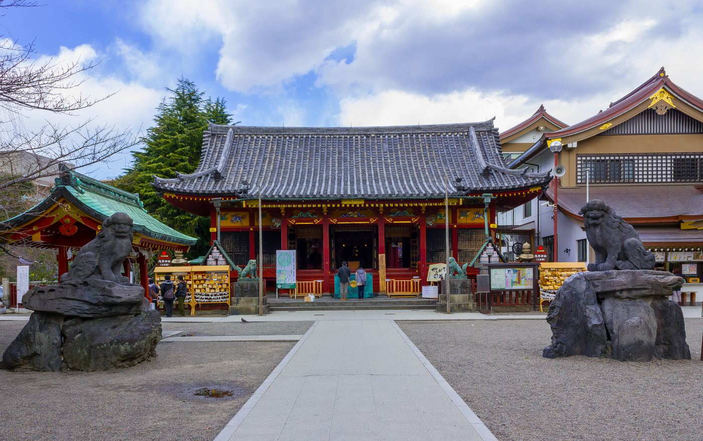
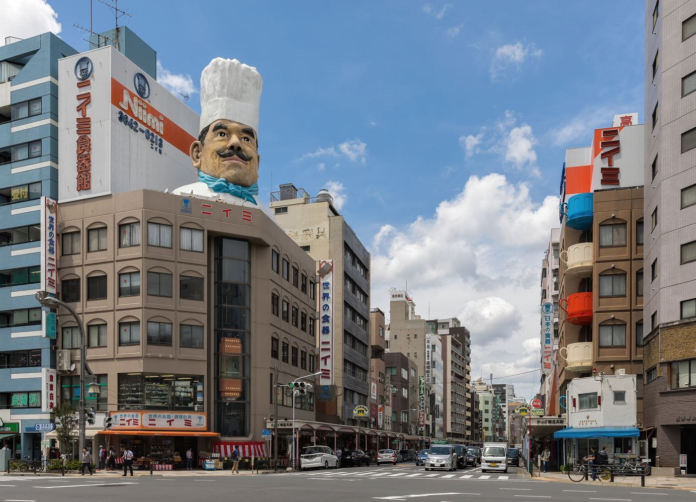
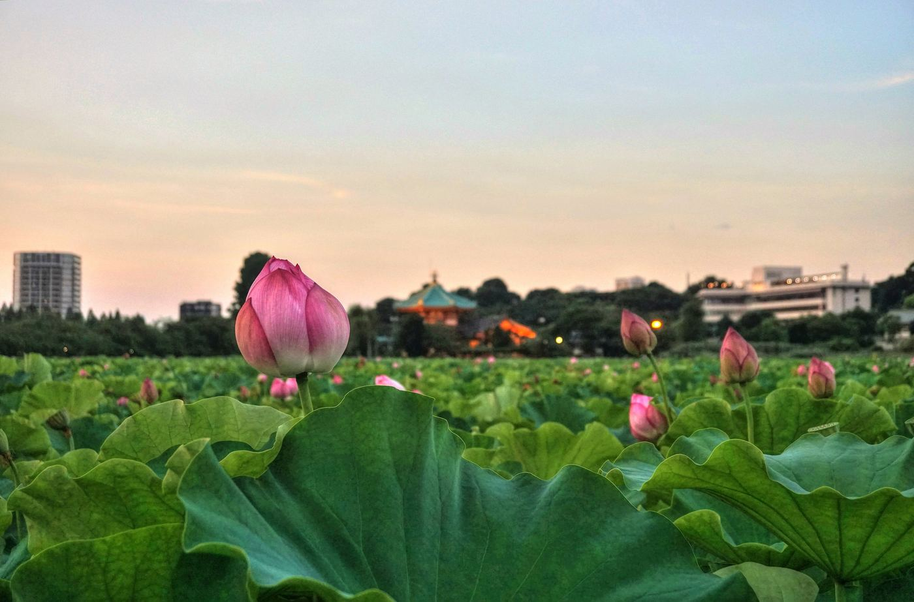
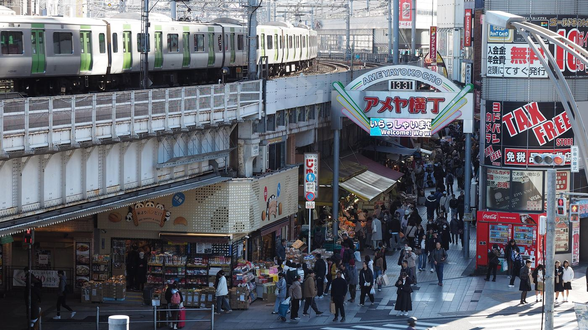
| 시간 | 일정 | 차선책 |
|---|---|---|
| 07:00 | 센소지 이른 아침본당 06:00 개방. 사진에 사람이 안 들어오는 유일한 시간. 본당 앞 → 오층탑 → 아사쿠사 신사 순 | 늦잠이면 이 블록만 빼고 08:45 페리칸부터 |
| 07:40 | 나카미세 셔터 벽화 → 카미나리몬가게가 열기 전 셔터에 그려진 아사쿠사 사계절 그림. 카미나리몬 정면 사진도 이 시간이 제일 깨끗 | |
| 08:15 | 숙소 복귀 · 짐 정리칼·액체·과자는 캐리어(위탁)로 | |
| 08:45 | 페리칸 카페 줄 서기寿3-9-11 · 09:00~17:00, 수·일 휴무(토요일 영업). 오픈 전부터 줄. 숙소에서 도보 10분 안팎 | 줄이 30분 넘으면 옆 페리칸 빵집에서 식빵만 사서 숙소·공원에서. 또는 카미나리몬 근처 커피 노포 |
| 09:00 | 토스트 · 프루트 샌드 아침탄 자국 난 두꺼운 토스트가 대표. 30분 | |
| 09:40 | 체크아웃 · 짐 맡기기15:35에 찾는다고 말해 두기 | |
| 10:00 | 갓파바시 도구거리로 도보아사쿠사에서 15분. 국제거리 건너 서쪽 | |
| 10:15 | 갓파바시 도구거리대부분 10:00~17:00, 토요일 90% 영업. 남쪽 끝 니이미(요리사 머리)에서 북쪽으로 800m. 식품 모형 키링, 그릇, 칼(카마아사 등) | 비 오면 소라마치 실내 쇼핑, 또는 우에노 국립과학박물관·도쿄국립박물관(09:30 개관) |
| 11:20 | 타와라마치역 → 긴자선 우에노3정거장, 10분. 시부야 방면 | |
| 11:40 | 우에노 공원 · 시노바즈 연못40분 한 바퀴. 연꽃은 끝물이지만 연잎 풍경과 벤텐도는 볼 만함 | |
| 12:20 | 점심 · 이센 본점 또는 호라이야둘 다 1930년 창업. 이센은 카츠산도 원조(포장 가능, 기내 간식으로도), 호라이야는 히레카츠. 12시 넘으면 줄 | 둘 다 길면 톤하치테이(1947년). 그것도 길면 아메요코 안 해산물 덮밥 |
| 13:30 | 아메요코 시장대부분 10:00~20:00. 과자 도매 니키노카시, 건어물, 컷 과일, 화장품·운동화 할인. 묶음 판매가 기본이라 흥정은 안 통함 | 사람에 지치면 야나카 긴자(닛포리 1정거장) 옛 골목. 단 15:00엔 출발해야 함 |
| 14:30 | 우에노역 → 긴자선 아사쿠사15분. 종점이라 못 지나침 | |
| 14:50 | 나카미세 마지막 쇼핑 · 돈키호테 아사쿠사점면세는 여권 지참. 액체류 100ml 초과는 위탁 | 온천을 아직 못 갔으면 쇼핑 대신 14:00 사카에유(택시 10분) → 15:20 숙소 복귀 |
| 15:35 | 숙소에서 짐 찾기 | |
| 15:50 | 아사쿠사역 → 나리타행 액세스 특급A1 출구 쪽 개찰. 행선지 "成田空港" 확인. 약 40분 간격이라 15:50까지 승강장에 | 놓치면 긴자선 우에노(15분) → 케이세이 우에노 스카이라이너(41분). 17:15 도착으로 아직 안전 |
| 17:00 | 나리타 도착 · 에어부산 카운터출발 2시간 55분 전. 터미널 번호는 이티켓 확인 후 맞는 역에서 하차. 면세점에서 남은 엔화 정리 | 17:30까지만 도착하면 문제없음. 그 뒤로는 체크인 마감 위험 |
| 19:55 | BX165 출발 → 22:35 인천eSIM은 귀국 후 SIM 관리자에서 삭제 |
1일차: 스카이트리 전망대만 취소하고 수족관·소라마치 쇼핑으로 시간을 채움, 저녁 후 온천은 그대로. 3일차: 갓파바시 대신 우에노 박물관, 아메요코는 아케이드가 있어 비에 강함. 우산은 편의점 500엔.
텐동 점심을 빼고 나카미세 간식으로 때운 뒤 센소지 → 체크인 → 스카이트리 순서 유지. 17:00 예매는 18:00으로 변경 가능하면 변경, 안 되면 야경만.
전망대는 과감히 포기. 대신 아사쿠사 문화관광센터 8층 무료 전망 테라스(카미나리몬 맞은편, 21:00까지)에서 센소지·스카이트리 야경. 0엔.
텐동 → 별관 → 아사쿠사 멘치. 돈카츠 → 톤하치테이 → 아메요코 해산물 덮밥. 페리칸 → 빵만 사서 공원. 30분 넘게 기다리지 않는 걸 원칙으로.
1일차 스미다 공원·소라마치 쇼핑 생략, 3일차 우에노 공원 산책 생략. 온천은 피곤할수록 넣는 쪽으로.
비행기 모드 켰다 끄기 → 네트워크 수동 선택. 그래도 안 되면 나리타 1·2터미널 도착층 통신사 카운터에서 물리 유심(3일 2,000엔대). 지도는 구글맵 오프라인 지도를 미리 받아 두면 데이터 없이도 됨.
가는 날: 스카이라이너 → 우에노 → 긴자선. 오는 날: 긴자선 우에노 → 스카이라이너. 둘 다 30분 안에 대안이 있어 공항은 문제없음.
스카이트리 18:40 하강 → 오시아게역 한조몬선 → 키요스미시라카와 환승 오에도선 → 츠키시마(약 30분). 식사 후 아사쿠사 복귀는 오에도선 → 쿠라마에 환승 아사쿠사선. 온천은 23:00 도착으로 조정.
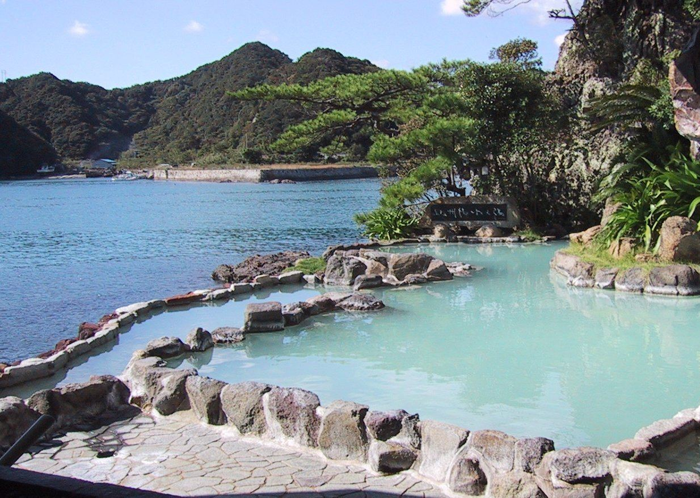
왼쪽 사진은 노천탕 분위기 예시(와카야마 나치카츠우라)이며 두 시설의 실제 사진이 아닙니다. 문신 규정과 요금은 방문 전 공식 사이트 확인.
빨간 대형 초롱의 카미나리몬이 상징. 본당 앞 향로 연기를 몸에 쐬면 액운을 막는다는 풍습. 오미쿠지는 흉이 유독 많이 나오기로 유명해서 그 자체가 재미.
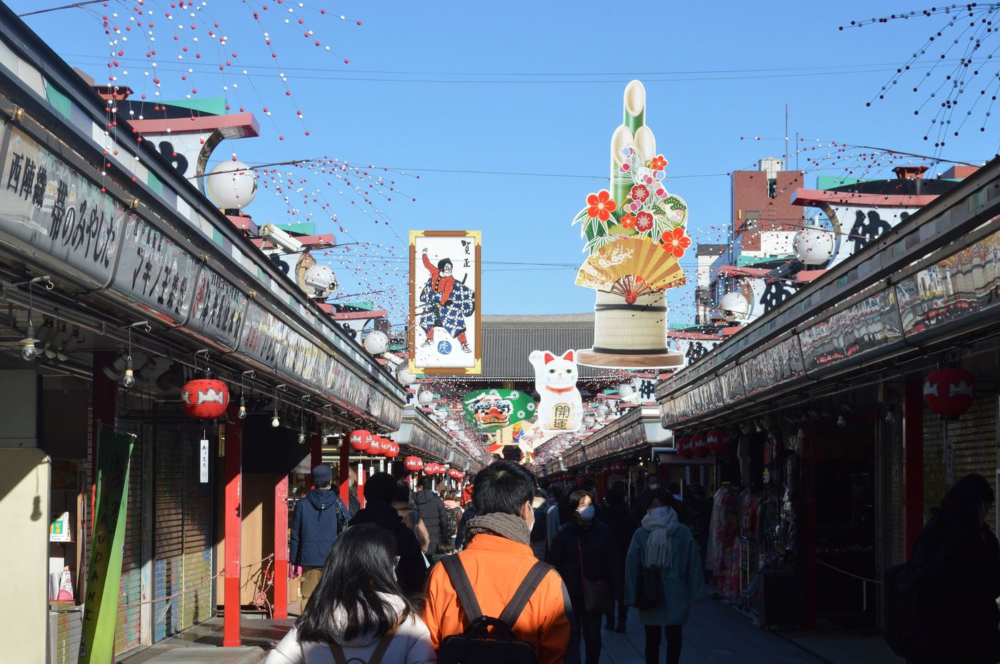
아게만주(튀김 만주, 코코노에), 키비단고(아즈마, 매장 앞 실연), 닌교야키(키무라야 본점). 사서 그 자리에서 먹는 게 매너.
참기름에 튀겨 진한 간장 타레를 끼얹는 아사쿠사식. 겉이 까맣고 달짝지근함. 에비텐동이 대표, 현금만 받는 경우가 있어 준비.
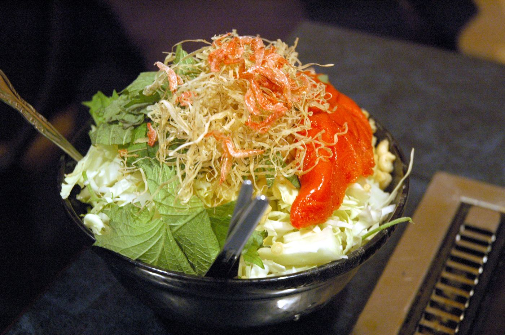
오코노미야키보다 반죽이 묽어 철판에 펼쳐 익히고 작은 주걱으로 긁어 먹음. 명란 떡 치즈 조합이 입문용. 사진은 굽기 전 재료 상태.
텐보데크 350m가 기본, 회랑 450m는 추가 요금. 일몰 30분 전 입장이 최적. 예매 없이 가면 비싸고 줄이 김.
도넛형 해파리 수조와 펭귄 전시가 대표. 평일 10:00~20:00(최종입장 19:00), 대인 2,700엔. 스카이트리 바로 옆이라 일몰 전 시간 채우기 좋음.
식당용 칼·그릇·냄비를 소매로. 식품 모형 키링이 기념품으로 인기. 칼은 반드시 위탁수하물.
이센(카츠산도 원조), 호라이야(히레카츠), 톤하치테이. "젓가락으로 잘리는 돈카츠"가 우에노 스타일. 식후 연못 산책.
과자 도매 니키노카시, 건어물·과일 컷, 화장품·운동화 할인. 연말이 절정이지만 평소 토요일도 활기.
센소지 서쪽, 소 힘줄 니코미와 호피(맥주맛 음료+소주)가 명물. 대낮부터 좌석이 차는 서민 술집 거리. 예약 없는 저녁의 대안.
메뉴를 늘리지 않는 걸로 유명한 빵집. 카페는 그 빵을 두툼하게 구운 토스트와 프루트 샌드가 대표.
| 항목 | 내용 | 엔 |
|---|---|---|
| 공항 왕복 | 액세스 특급 나리타↔아사쿠사 | 약 2,600 |
| 시내 교통 | 긴자선·아사쿠사선 6~8회 | 약 1,500 |
| 스카이트리 | 텐보데크, 변동제(예매 완료) | 1,800~3,600 |
| 스미다 수족관 | 대인 1매 | 2,700 |
| 식사 | 텐동 2,000 · 몬자 2,500 · 돈카츠 2,500 · 페리칸 1,200 | 약 8,000 |
| 간식·카페 | 나카미세 간식, 커피, 편의점 | 약 2,000 |
| 온천 | 마츠리유(요금 공식 확인) 또는 사카에유(센토 요금) | 600~3,000 |
| 합계 | 쇼핑·숙박비·인천공항 주차 제외 | 약 19,000~23,000 |
긴급: 경찰 110 · 구급 119 · 영사콜센터 +82-2-3210-0404(24시간)
일본어 한마디 모음은 맨 아래 §를 참고.
사진: 위키미디어 커먼즈(각 파일 페이지의 CC 라이선스 표기에 따름) — Keisei_Type3000-3026.jpg · Ueno_20241210_133139.jpg · Asakusa_shrine_2012.JPG · Day2-2_(40909714314).jpg · Kappabashi-dori_streetcorner_(Kitchen_town_-_southern_end)_Tokyo_Japan.jpg · Monjayaki_Before.JPG · Asakusa_Nakamise_2021-12_ac.jpg · Onsen_in_Nachikatsuura,_Japan.jpg · Sensoji_2023.jpg · 不忍池_-_panoramio.jpg · Tokyo_Skytree_2014_Ⅲ.jpg · Tendon_of_Dotenoiseya.jpg · Jellyfish_in_Sumida_Aquarium_20180215.jpg
| 예약한 ○○입니다 | 予約した○○です 요야쿠시타 ○○데스 |
| 짐 맡겨도 될까요 | 荷物を預かってもらえますか 니모츠오 아즈캇테 모라에마스카 |
| 세탁기 어떻게 써요 | 洗濯機の使い方を教えてください 센타쿠키노 츠카이카타오 오시에테 쿠다사이 |
| 체크아웃 몇 시예요 | チェックアウトは何時ですか 첵쿠아우토와 난지데스카 |
| 추천 메뉴는요 | おすすめは何ですか 오스스메와 난데스카 |
| 포장 되나요 | 持ち帰りできますか 모치카에리 데키마스카 |
| 물 좀 주세요 | お水ください 오미즈 쿠다사이 |
| 계산해주세요 | お会計お願いします 오카이케이 오네가이시마스 |
| (들으면) 몇 분이세요 | 何名様ですか 난메이사마데스카 |
| 나리타 공항 가나요 | この電車は成田空港に行きますか 코노 덴샤와 나리타쿠코니 이키마스카 |
| 이 표 맞아요 | この切符で合っていますか 코노 킷푸데 앗테이마스카 |
| 환승 어디서 해요 | どこで乗り換えますか 도코데 노리카에마스카 |
| 티켓 예매했어요 | チケットを予約しています 치켓토오 요야쿠시테이마스 |
| 사진 찍어도 되나요 | 写真を撮ってもいいですか 샤신오 톳테모 이이데스카 |
| 문신 있어도 되나요 | タトゥーがあっても入れますか 타투가 앗테모 하이레마스카 |
| 수건 대여 되나요 | タオルのレンタルはありますか 타오루노 렌타루와 아리마스카 |
| 면세 되나요 | 免税できますか 멘제이 데키마스카 |
| 카드 되나요 | カード使えますか 카도 츠카에마스카 |
| 도와주세요 | 助けてください 타스케테 쿠다사이 |
| 여권을 잃어버렸어요 | パスポートをなくしました 파스포토오 나쿠시마시타 |
| 가까운 병원이 어디예요 | 近くの病院はどこですか 치카쿠노 뵤인와 도코데스카 |
① 持ち帰りできますか ② お会計お願いします ③ 免税できますか ④ チェックアウトは何時ですか
정답 ① 모치카에리 데키마스카
① カード使えますか ② 免税できますか ③ お水ください ④ 助けてください
정답 ② 멘제이 데키마스카
① 사진 찍어도 되나요 ② 짐 맡겨도 될까요 ③ 환승 어디서 해요 ④ 수건 대여 되나요
정답 ① 샤신오 톳테모 이이데스카
① お会計お願いします ② パスポートをなくしました ③ 助けてください ④ どこで乗り換えますか
정답 ③ 타스케테 쿠다사이
① 예약한 ○○입니다 ② 티켓 예매했어요 ③ 이 표 맞아요 ④ 추천 메뉴는요
정답 ② 치켓토오 요야쿠시테이마스
① 나리타 공항 가나요 ② 세탁기 어떻게 써요 ③ 가까운 병원이 어디예요 ④ 체크아웃 몇 시예요
정답 ③ 치카쿠노 뵤인와 도코데스카
{kind=link}
{kind=link}
{kind=link}
{kind=link}
{kind=link}
{kind=link}
{kind=link}
{kind=link}
{kind=link}
{kind=link}
{kind=link}
{kind=link}
{kind=link}